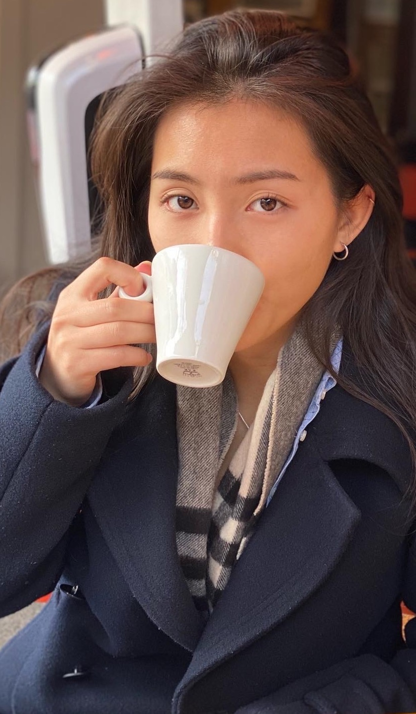

-

WINNER of 2021 design jam!
-
Design jam @DEPT
Two days ideation generation
Designing an appropriate solution for Vluchtelingen Werk Nederland by identifying and developing the problem using Service Design and Design Thinking methodology under the guidance of Dept coaches.
Design challenge:
How can we help refugees in the Netherlands create their own social safety net and stimulate making a social contribution after their integration journey?
-
I am Yente van der Aart (22), UX/UI designer, student at the University of applied science Amsterdam.
In my second year, I did commercial design as a profiling subject. Furthermore, I specialised in behavioural design in my third year.
Last year, I completed a minor in International Global Communication at the school ISCOM Paris. With this minor, I gained my knowledge in marketing and branding. And explored designing with a commercial purpose. And living abroad has increased my intercultural experiences and evolved me as a person.
Besides my studies, I like to engage in interior design and explore eco-friendly ways of housing and living. My daily goal is trying to be the best version of myself. - 
Let's grab coffee!
M@il ME